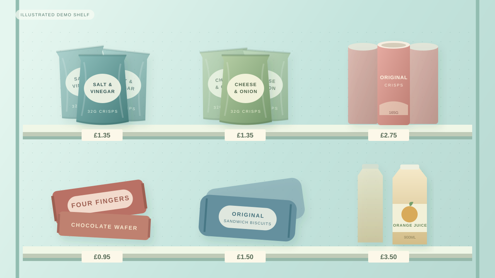

VAST Builders Challenge · London
VAST Builders Challenge · LondonEvery put-back has a storyThe till sees
The till sees
what’s in
the basket.
The shelf sees what was nearly bought.
One shelf camera.
Three useful views.

Illustrated demo shelf↩
Nearly bought. Now remembered.One checked put-back → one useful signal